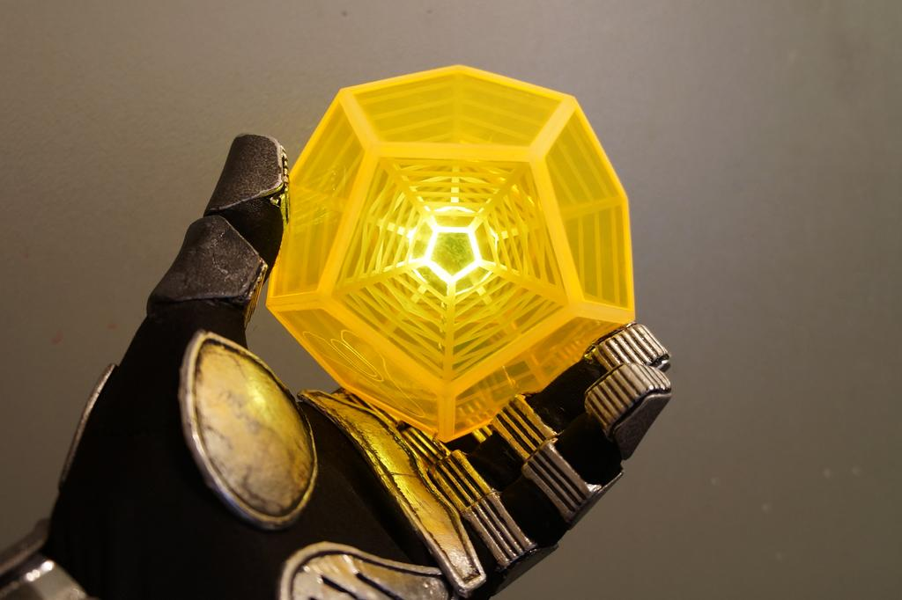

An exotic engram from Destiny, symbolizing knowledge and power.
Personal Background: I was born in Kansas, but I've lived most of my life here in North Carolina. I attended Elizabeth Lane Elementary, South Charlotte Middle School, and Providence High School.
Professional: I have volunteered for more than 300 hours at a non-profit organization called the Matthews H.E.L.P. center.
Academic Background: I have taken many computer science courses throughout my academic career. I have certifications in database management as well as Quickbooks.
Background in the subject matter of this course: I have taken an html class before and utilized different functions to create things like stores with functioning shopping carts.
Primary Computer Platform: Windows 10.
Courses I'm taking:
STAT 2223 Elements of Statistics 2
LBST 1105 Arts and Society: Visual Arts
ITSC 3688 Computers and their Impact on Society
ITIS 3135 Web App Design and Development
Something Interesting: I have been playing video games for a long time, and because of my performance on a random game of Battlefield 1 in 2018, I was picked up by a professional group that went by Evil(EVL) and eventually accepted during their transformation into The Savage Few(SVG).
I'd also like to share: This is my third year attending UNCC.